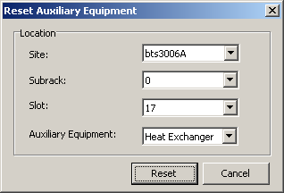

This describes how to reset the heat exchanger on the BTS3006A. The HEU of the BTS3006A monitors the running of the heat exchanger. When the heat exchanger incurs an error, the HEU reports an alarm through the main control board. You can reset the heat exchanger through the LMT.
Prerequisites
- The LMT runs normally.
- The communication between the LMT and the BSC is normal.
- The communication between the BSC and the BTS is normal.
Procedure
- Through GUI
- Choose . A dialog box is displayed, as shown in Figure 1.
Figure 1 Reset Auxiliary Equipment dialog box

- Set Site, Subrack, Slot, and Auxiliary Equipment. Click Reset. A dialog box is displayed, indicating that the auxiliary equipment is successfully reset.
- Click OK.
- Through MML
- Run the RST BTSAUXEQP command on the LMT to reset the auxiliary equipment of the BTS.
Copyright © Huawei Technologies Co., Ltd.